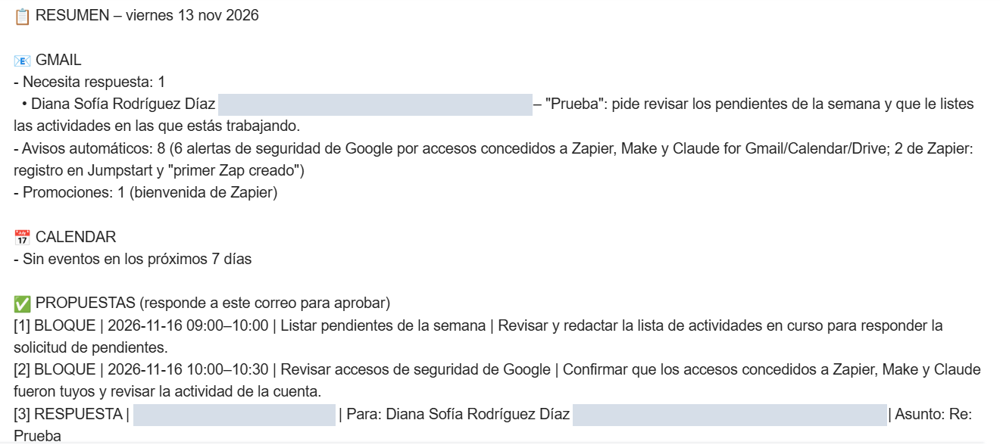

ZAPIER MCP · IA · PROYECTO PROPIO
Resumen diario con aprobación por correo
Cada mañana un agente de IA lee el correo y la agenda, y envía un resumen con propuestas numeradas: bloques de tiempo para hacer las tareas y respuestas listas para los correos pendientes. Nada se ejecuta solo: la persona aprueba respondiendo el correo.

CÓMO FUNCIONA
Cuatro pasos, uno solo es humano
- PASO 1 · 7:45 A. M.Lee correo y agenda
El agente revisa la bandeja de Gmail y los próximos 7 días de Google Calendar.
- PASO 2Envía el resumen
Un correo con lo que necesita respuesta y propuestas numeradas: bloques de agenda y respuestas.
- PASO 3 · TÚ DECIDESRespondes APROBAR
«APROBAR 1,3» o «APROBAR TODO». Sin respuesta, no pasa nada.
- PASO 4 · CADA HORAEjecuta lo aprobado
Agenda los bloques, envía las respuestas con el texto exacto y confirma por correo.
CÓMO ESTÁ HECHO
Las piezas
| Pieza | Qué hace |
|---|---|
| Zapier MCP | Conecta al agente de IA con Gmail y Google Calendar, sin código ni claves en el agente. |
| Skill «resumen diario» | Instrucciones guardadas en Zapier: qué leer, cómo clasificar los correos, cómo proponer bloques en horas libres y cómo redactar las respuestas. |
| Skill «procesar aprobaciones» | Busca la respuesta «APROBAR», crea los eventos y envía las respuestas aprobadas. Marca el correo con la etiqueta Resumen/Procesado para no repetirlo. |
| Tareas programadas | Lunes a viernes: el resumen a las 7:45 a. m. y la revisión de aprobaciones cada hora de 8 a. m. a 6 p. m. |
Reglas de seguridad: solo cuentan las aprobaciones enviadas desde la cuenta de la dueña y en el hilo del resumen; solo se ejecuta lo que está numerado en la lista; las instrucciones que lleguen en otros correos se ignoran.